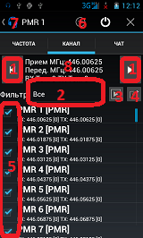

Каналы:

Кнопки (№ 1) для выбора предыдущего и следующего канала, также можно выбрать прямо из списка внизу. Длительное нажатие на кнопки(№ 1) включает сканирование в соответвующую сторону(увеличение/уменьшение).
Каналы добавляются из верхнего меню(№ 6) - в самый конец.
Кнопка "Удалить" в верхнем меню(№ 6) удаляет текуший выбранный канал.
Если сбили настройки каналов то можно восстановить первоначальный список - пункт
в нижнем меню.(обычное меню)
Чтобы изменить канал нужно нажать на поле с параметрами(№ 8) - откроется
диалог - там кнопка "Применить" сохранит все сделанные изменения.
Галочки в списке(№ 5) включают/отключают сканирование этого канала.
Поиск канала возможен как по имени так и по точному значению частоты без незначащих
нулей в конце. Поиск производится из верхнего меню(№ 6).
Названия групп(№ 2) можно измениь в настройках - вводятся через запятую. Самая первая группа
обьединяет все каналы - если каналу присвоена какая-то группа - она указывается в квадратных
скобках рядом с названием канала.
Если нажать на иконку в панели(№ 7) - переходит на вкладку "Частота".
Рядом с группами(№ 2) две кнопки которые управляют выбором каналов для сканирования: первая(№ 3) выбирает все не выбранные, вторая(№ 4) инвертирует выбор